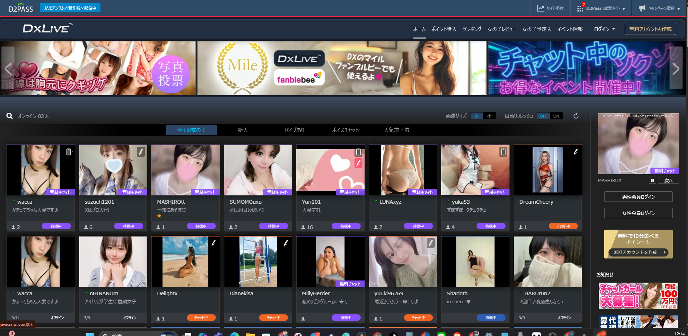
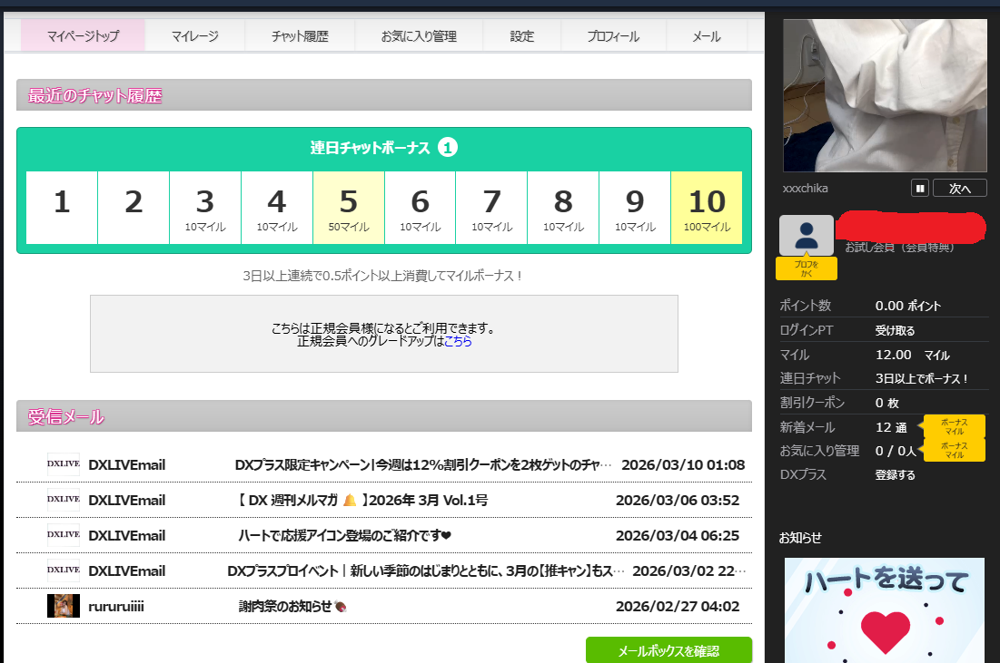
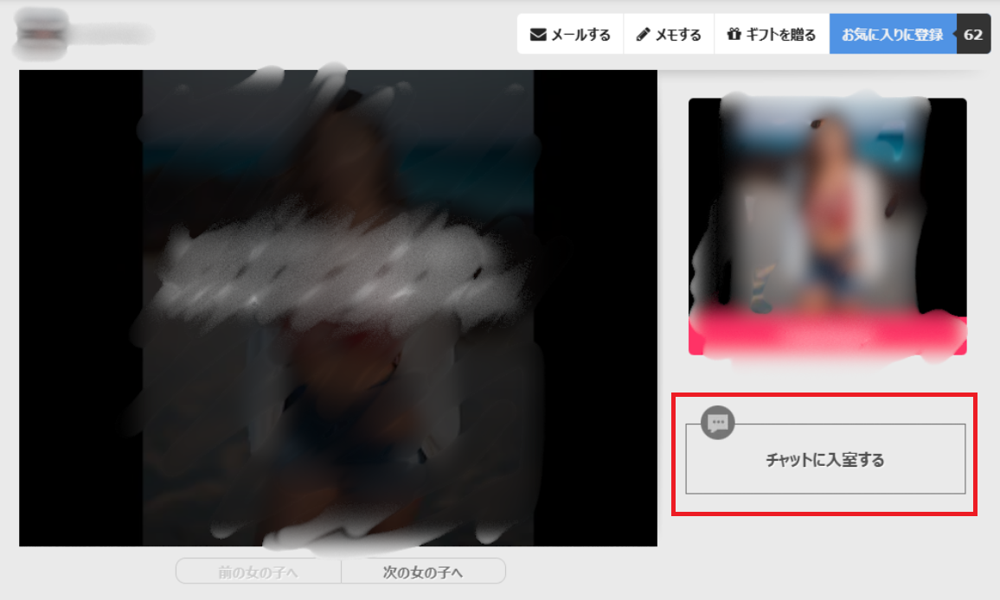

無事にDXLIVEへの登録は終わりましたか？
「登録はできたけど、画面に色々あってどこから見ればいいかわからない…」
最初は誰でもそう思いますよね！
ここでは、登録したばかりのあなたに向けて、「完全無料でまずはDXLIVEの雰囲気を楽しむための3つのステップ」を画面付きでやさしく解説します！
🐾 STEP 1：トップ画面の見方を知ろう！
ログインして最初に表示されるのがトップ画面です。ここには現在待機中のキャストさんがズラリと並んでいます。

▲ サムネイルが光っている子は今すぐお話しできる状態です！
一番大切なのは、画面上に表示されている「自分の持っているポイント」です。まずはここをチェックしてみてくださいね。
🐾 STEP 2：無料のお試しポイントを確認しよう！
DXLIVEでは、新規登録してくれた方に「無料のお試しポイント」をプレゼントしています。（※時期によってキャンペーン内容は変わります）

▲ 登録したばかりでも、少しだけ無料で遊べちゃうんです
「えっ、これだけで何ができるの？」と思うかもしれません。実はこのポイントを使って、いきなりキャストさんと話さなくても、安全に“のぞき見”ができちゃうんです。
🐾 STEP 3：大人気機能「のぞき」を使ってみよう！
初心者の方に絶対に試してほしいのが「のぞき」という機能です。
これは、他の人がキャストさんと2ショットでお話ししている様子を、見えない所からコッソリ覗き見できるというドキドキのシステムです。

▲ こちら側は見えないので、バレずに雰囲気をチェックできます
いきなり自分から話しかけるのは緊張しますよね。まずは「のぞき」を使って、
「どんな風にお話ししてるのかな？」「この子、声がかわいいな」
と、いろいろなルームを少しずつ回ってみるのが大正解です！
無料ポイントで楽しんだ後は、「もっとお話ししたい！」と思うはずです。
次は、失敗しないお得なコイン（ポイント）の買い方を解説します。
👉【損しない】コインの購入方法ガイドへ進む